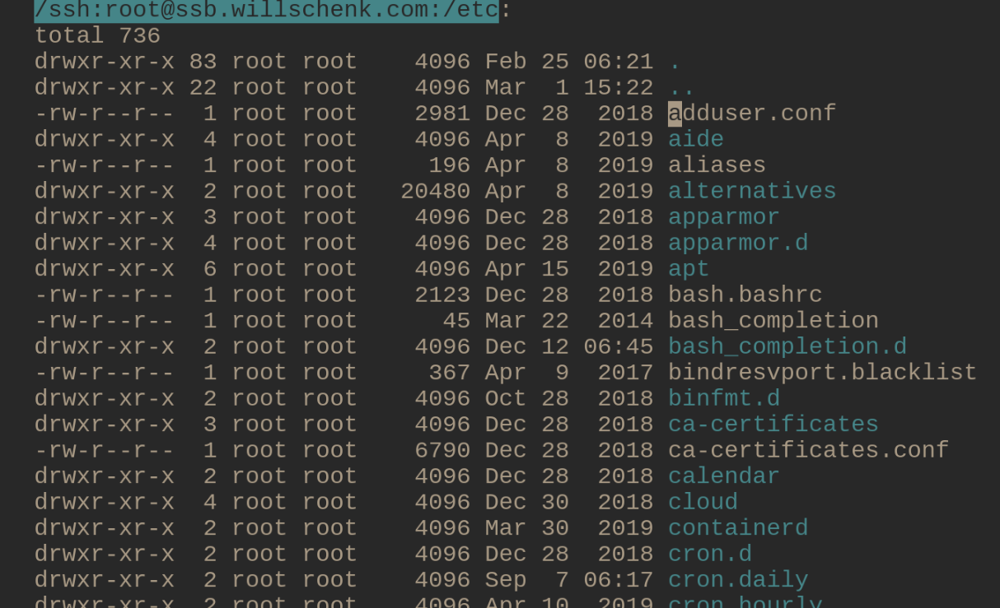

Emacs is amazing. It’s a very different sort of thing than a code text editor like Vim or an IDE like VSCode. It’s a different way of thinking of how to interact with a computer, where you build up techniques on top of simple tricks that let you get amazing things done. Of course, part of the appeal/challenge is that you need to figure out how to make it work yourself. Since there’s not much in the way of gentle tutorials, lets look at what you can do with tramp to get a sense of what is possible.
Edit a file on a remote server
Lets say that you have a remote server named ssb.willschenk.com and you want to edit the /etc/hosts file. We can open that up directly in emacs. The basic form for connecting to something using TRAMP is:
C-x C-f /remotehost:filename RET (or /method:user@remotehost:filename)
So, for example, if I type C-x C-f /ssh:root@ssb.willschenk.com:/etc/host= it connects over ssh to the remote server and edits that file. If I save the file, copy and paste stuff, etc it will transparently sync the file over the network. We don’t need to install a text editor on this server, and we’ll have all of our local configurations and copy and paste and all that stuff that we are used to. No installing vim for some quick configuration file editing.

Directory browsing
=dired= mode also works, so if you want to move around just =C-x C-f= and select the directory, then you can navigate around as you normally would.

Open a shell
M-x shell opens a shell with the current working directory of the active buffer. This also works if that is a remote file. If you use the C-u prefix command, you can open a shell with the buffer’s name specified. This is handy if you have multiple things open at the same time.
C-u M-x shell will ask you want you want to name the buffer (I suggest the hostname), the starting directory which you be the /ssh... string, and then the shell command to use, which I leave as /bin/bash. Now you are interacting over ssh to the remote server!
This also keeps track of which directory you are in, so if, inside of the shell you cd, emacs knows where you are. If you use the normal keystrokes to open a file, C-x C-f it defaults to the directory that you are in on the remote server. TAB completion works in the minibuffer too!
Inside of shell mode you can use C-up and C-down to cycle through command history, all the normal things work.

Edit a file as root
Need to edit a file as a different user?
C-x C-f /sudo::/etc/hosts
TRAMP in this case is piping things through sudo rather an ssh, so we are making a remote connection to a different user on our computer.
Editing a file inside of a docker container
Another fun trick is to edit a file inside of a docker container. Is this what docker is used for? No, but it’s sometimes useful if you are debugging a docker file or whatever and need a tigher feedback loop.
Inside of your .emacs
;; Open files in Docker containers like so: /docker:drunk_bardeen:/etc/passwd
(push
(cons
"docker"
'((tramp-login-program "docker")
(tramp-login-args (("exec" "-it") ("%h") ("/bin/bash")))
(tramp-remote-shell "/bin/sh")
(tramp-remote-shell-args ("-i") ("-c"))))
tramp-methods)
(defadvice tramp-completion-handle-file-name-all-completions
(around dotemacs-completion-docker activate)
"(tramp-completion-handle-file-name-all-completions \"\" \"/docker:\" returns
a list of active Docker container names, followed by colons."
(if (equal (ad-get-arg 1) "/docker:")
(let* ((dockernames-raw (shell-command-to-string "docker ps | awk '$NF != \"NAMES\" { print $NF \":\" }'"))
(dockernames (cl-remove-if-not
#'(lambda (dockerline) (string-match ":$" dockerline))
(split-string dockernames-raw "\n"))))
(setq ad-return-value dockernames))
ad-do-it))To try this out, we can spin up a quick server like this
docker run --rm -p 6379:6379 --name redis_container redis
And then look at files inside of it using
C-x C-f /docker:redis_container:/
Which opens up a directory browser in the container. The tricks of open and editing the files are the same, and you can also open up a shell in there to do what you need.
Now obviously one of the points of Docker is to ship code around that’s repeatably built, and this goes againsts the spirit of that. But if you want to treat them as easily distrubuted virtual machines it’s very handy.
Inside a docker container on a remote host
We can also chain things together! Lets say that we have a docker container named ssb-pub running on a remote host ssb.willschenk.com, we can connect to it using:
C-x C-f /ssh:root@ssb.willschenk.com|docker:ssb-pub:/
This works for file browsing as well as opening up a shell on the container.

It requires play
If you want to sit down and just start working on your project, the learning curve of emacs is too great. Its better to use a tool that’s already configured and optimized for what you want to do. The Laravel from Scratch documentation, which is fabulous, recommends using PHP Storm for people who are learning Laravel, since you can just get going and focus on solving your problem without going down the rabbit hole. This is great. But sometimes its fun to go down the rabbit hole, and if you enjoy the playing the reward is great.
Emacs was first released in 1976 (take a look at the emacs timeline if you want to see the heritage in all it’s glory, though you’ll notice that it ends at 2007, 13 years ago) and given that it’s been around for 44 years at this point, I think we can say that it’s not a fad. What you learn here will be useful in the future no matter what the latest hot stuff is next.